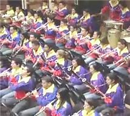

Cambiar al mundo con música: Premio TED 2009
Con Benjamín Zander ya vimos el poder de la música para ilustrar la pasión y el gozo por lo que hacemos. Ahora quiero traerles un par de charlas en TED que muestran como también usando la música, se transforman vidas.
Los Premios TED
Antes que nada, estas charlas se enmarcan en los Premios TED, que cada año se entregan a tres personas, cada una con proyectos con el potencial de transformar al mundo. TED otorga $100,000 US, y la garantía de apoyo por parte de diversas empresas e individuos asociados a TED para dichos proyectos. En esta anotación les traigo a José Antonio Abreu, uno de los ganadores de los Premios TED 2009.
El sueño: Llevar la música a los niños del mundo entero
En Venezuela, como en buena parte del mundo, la desigualdad económica y la injusticia social están presentes en la vida de muchos (cuando no de la mayoría) de los habitantes. Esto condujo a que en 1975, el músico, economista y reformador social José Antonio Abreu, creara El Sistema, un modelo educativo y formativo para niños y jóvenes basado en la instrucción de la música clásica.

En la actualidad, El Sistema es una organización a nivel nacional con más de 100 orquestas juveniles, más de 50 orquestas infantiles y 250 centros musicales; y está compuesta de casi 250,000 jóvenes músicos.
Esta institución ha transformado y sigue transformando la vida de los niños y jóvenes venezolanos. En las palabras del maestro Abreu:
La música se constituye en fuente del desarrollo de las dimensiones del ser humano, que eleva su condición espiritual y lo conduce a un desarrollo integral de su personalidad.
De tal manera que se dan inmensas ganancias intelectuales y afectivas, entre otras, la adquisición de principios de liderazgo, de enseñanza, de capacitación, el sentido de compromiso, de responsabilidad, de generosidad y entrega a los demás; de aporte individual para el logro de inmensos fines colectivos.
Mejor dejo de citar y les presento los dos videos: la ponencia del maestro Abreu, directamente desde TED, seguida por el concierto de la orquesta Teresa Carreño, dirigida por Gustavo Dudamel, alumno de El Sistema, con subtítulos y un enlace para descargarlo.
Llevemos música a los niños de todo el mundo
Presentación en TED de El Sistema por el maestro Abreu, dado que está casi completamente en español, la enlazo desde TED. En esta página pueden encontrar un enlace donde descargar el video. También pueden descargarlo aquí.
Traducción de la introducción y del deseo del maestro Abreu al final de la ponencia:
Chris Anderson:
Vamos a Caracas en vivo, para escuchar el deseo del maestro Abreu para el Premio TED.José Antonio Abreu:
Este es mi deseo para el Premio TED:Deseo que ayuden a crear y documentar un programa de entrenamiento especial para al menos 50 talentosos jóvenes músicos, apasionados por su arte y por la justicia social, y dedicados a desarrollar El Sistema en los Estados Unidos y en otros países.
Muchas gracias.
El concierto, director Gustavo Dudamel
La Orquesta Juvenil Teresa Carreño, con los mejores músicos de nivel preparatoria del programa venezolano El Sistema. Interpretan la Sinfonía No. 10 de Shostakosvich, y una pieza del compositor mexicano (^_^) Arturo Márquez, Danzón No. 2. Subtítulos en español.
Descarga este video en alta resolución*: Premio TED 2009: Cambiar al mundo con música
Archivo comprimido en formato .zip (74.7 MB)
Video: mp4, audio: mp3
Subtítulos en español: Ajmme Kajros
Original en inglés sin subtítulos en TEDTalks:
Gustavo Dudamel and the Teresa Carreño Youth Orchestra: A musical sensation from Venezuela.
*Archivo subtitulado y distribuido bajo los términos de uso de TED Conferences LLC.
Metadatos y acciones
 Temas: cultura, inspiracion, musica, tedtalk, video ⋅
Para guardar: Enlace permanente a esta anotación.
Temas: cultura, inspiracion, musica, tedtalk, video ⋅
Para guardar: Enlace permanente a esta anotación.
 Print This Post
Print This Post
Comentarios
Los comentarios están cerrados.
Categorías
Últimas 4 anotaciones
Últimas anotaciones en cada categoría

Divulgación
El dinero no fomenta la creatividad: Daniel Pink en TEDGlobal 2009

Inspiración
Los 30 no son los nuevos 20

Noticias
Ver tu mente en tiempo real: Christopher deCharms en TED 2008
![Música en la era digital [Animación]](../../../wp-content/themes/tma/images/featured/animation_04_2009_featured.jpg)
Ocio
Música en la era digital [Animación]
septiembre 7, 2009, 5:55 pm
Lo de Abreu es un fenómeno maravilloso y de infinita trascendencia en la vida de toda una nueva generación , mas allá de Venezuela incluso.
Todos los premios y reconocimientos son pocos para este visionario y luchador.
Gracias por aumentar el stock de videos con este también.